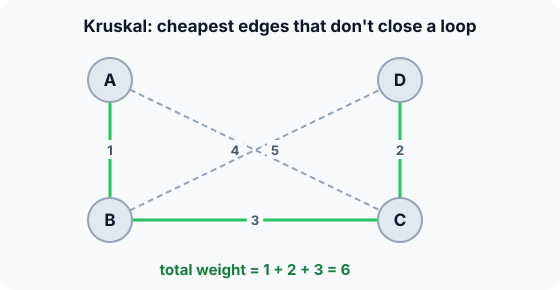

Prerequisites
- Undirected weighted graphs (see representations).
- Union-Find, to detect loops fast.
- Sorting (see Sorting).
The analogy
Everyday analogy
Imagine building roads between villages on a tight budget. You look at the cheapest possible road first, then the next cheapest, and build each one unless the two villages are already connected some other way.
Kruskal's algorithm is that budget rule. Groups of connected villages merge as roads are built, and a road inside one group is pointless, so it's skipped.
How it works
Precondition: an undirected, connected, weighted graph. Negative weights are fine. On a disconnected graph it gives a minimum spanning forest.
Start with the edge list by hand
Edges sorted by weight: A–B 1, C–D 2, B–C 3, A–C 4, B–D 5. At the start every town is its own group. Predict, then open "Check".
Example: predict before you read
Step 1. Take A–B (1) and C–D (2). Predict the groups.
Check
Both are accepted: groups {A, B} and {C, D}.
Step 2. Cover the next line and guess: B–C (3)?
Check
Accepted: B and C are in different groups, so it joins them into {A, B, C, D}.
Step 3. A–C (4) and B–D (5). Predict, and give the total.
Check
Both rejected: their ends are already in the same group, so each would close a loop. Tree: A–B, C–D, B–C, total 1 + 2 + 3 = 6.

Quick recall: Before reading further, cover the text above and say out loud: when does Kruskal reject an edge?
Check your answer
When both ends are already in the same connected group, because adding it would close a cycle.
Finish the picture: why greedy works
Suppose someone claims a cheaper tree without A–B, the cheapest edge.
- Add A–B to their tree. Predict what appears.
Check
A cycle: their tree already connects A and B some other way.
- Remove another edge of that cycle. Predict the new total.
Check
Every other edge on the cycle costs more than 1, so swapping it for A–B makes the tree cheaper or equal. So the cheapest edge can always be in a minimum tree; the same argument repeats for each step.
Quick recall: Without scrolling up, say out loud: how many edges does a spanning tree on $V$ vertices have?
Check your answer
$V - 1$: here 4 towns, 3 edges.
The rule in plain words
Sort the edges by weight. Start with every vertex in its own group.
For each edge in order: if its ends are in different groups, add it to the tree and merge the groups; otherwise skip it. Stop after $V - 1$ edges.
Quick recall: Before you read the code, write Kruskal's loop in your own words. Then check below.
Check your answer
Go through the edges from cheapest to most expensive. For each, find the group of each end. If the groups differ, keep the edge and merge the groups; otherwise skip it.
The code
Read this code after you have done the run by hand. It will make more sense.
int find(int parent[], int x) { /* group representative */
while (parent[x] != x) x = parent[x];
return x;
}int kruskal(int n, int m, int eu[], int ev[], int ew[]) { /* edges sorted by weight */
int parent[100];
for (int i = 0; i < n; i++) parent[i] = i; /* every vertex alone */
int total = 0;
for (int j = 0; j < m; j++) {
int a = find(parent, eu[j]), b = find(parent, ev[j]);
if (a != b) { parent[a] = b; total += ew[j]; } /* joins two groups: keep */
}
return total; /* weight of the MST */
}Definition
What you just did, in one line: Kruskal's algorithm builds a minimum spanning tree by taking edges in increasing weight order and keeping each one that connects two different components.
A minimum spanning tree connects all vertices with $V - 1$ edges of minimum total weight.
flowchart TD
A["sort edges by weight"] --> B["take the next cheapest edge u-v"]
B --> C{"u and v in the same group?"}
C -->|yes| D["skip: it would close a cycle"]
C -->|no| E["keep it, merge the groups"]
D --> F{"V - 1 edges kept?"}
E --> F
F -->|no| B
F -->|yes| G["done: minimum spanning tree"]
How fast is it?
Quick recall: Before looking at the formula, predict: which step dominates the running time?
Check your answer
Sorting the edges: $O(E \log E)$. The Union-Find checks are almost constant each.
Sorting dominates; then each edge needs two finds and maybe one union, nearly constant with a good Union-Find:
$$O(E \log E) + O\big(E \cdot \alpha(V)\big) \;=\; O(E \log E) \;=\; O(E \log V)$$$\log E$ and $\log V$ differ by at most a factor of 2, because $E < V^2$.
| Step | Cost | Why |
|---|---|---|
| Sort the edges | $O(E \log E)$ | Comparison sort |
| All find / union calls | $O(E \, \alpha(V))$ | Union-Find with path compression and union by size |
| Total | $O(E \log E)$ | Sorting dominates |
| Extra space | $O(V + E)$ | Edge list and parent array |
Warning
The simple find above has no path compression, so a long chain of parents can make each call $O(V)$. Real implementations use the Union-Find tricks to keep it almost $O(1)$.
Exam tip
Exams ask for the order in which edges are accepted and rejected. List the sorted edges, then write "accept" or "reject (cycle)" next to each.
Common mistakes
- Rejecting an edge just because one end is already in the tree; only reject when both ends are in the same group.
- Forgetting to sort the edges first.
- Running it on a directed graph: minimum spanning trees are for undirected graphs.
Try it yourself
Exercise 1 (warm-up)
Edges: P–Q 2, Q–R 2, P–R 3, R–S 1. Which edges does Kruskal keep, and what is the total?
Hint
Start with the weight-1 edge.
Answer
R–S (1), P–Q (2), Q–R (2): total 5. P–R (3) is rejected because P and R are already connected.
Exercise 2 (a bit harder)
If all edge weights are different, is the minimum spanning tree unique? What if two edges have the same weight, as in exercise 1? Write your answer down before you open it.
Show answer
With all weights distinct, the MST is unique. With ties it may not be: in exercise 1, P–Q and Q–R tie, but here both are needed, so the tree is still unique. In general, swapping between tied edges can give different trees with the same total.
Did you know?
Did you know?
Joseph Kruskal published the algorithm in 1956, as a side result of a paper on the travelling salesman problem.
Stopping Kruskal early, before the last $k - 1$ merges, leaves $k$ groups: that is single-linkage clustering, used in data analysis.
Key points to remember
If you remember one thing from each line, remember the because.
- Kruskal takes the cheapest safe edge because the cheapest edge between two groups is always part of some minimum tree.
- It rejects edges inside one group because they would close a cycle.
- It runs in $O(E \log E)$ because sorting the edges dominates.
- Union-Find makes the cycle check fast because two finds tell whether two vertices are already connected.
- A spanning tree has $V - 1$ edges because each kept edge merges two groups, from $V$ groups down to 1.
Self-check questions
Answer these in order, out loud. They follow the page, so your answers become the script of your video.
- How is Kruskal like building roads on a budget?
Sample answer
You build the cheapest road first and keep going in order of cost, skipping any road between villages that are already connected.
- Walk through Kruskal on A–B 1, C–D 2, B–C 3, A–C 4, B–D 5.
Sample answer
Accept A–B, accept C–D, accept B–C (joins the two groups), reject A–C and B–D (cycles). Total 6.
- Why does the code compare
find(parent, u)withfind(parent, v)instead of checking the edge directly?A good answer mentions indirect connections.
Sample answer
Two vertices can be connected through other edges without an edge between them; only their group representatives reveal whether a new edge would close a cycle.
- So what is Kruskal's algorithm, in one sentence?
Sample answer
It builds a minimum spanning tree by taking edges from cheapest to most expensive and keeping each one that connects two different components.
- Why is it safe to always take the cheapest edge between two groups?
A good answer uses the swap argument.
Sample answer
If a minimum tree didn't use it, adding it creates a cycle with a more expensive edge; swapping them gives a tree that's no more expensive. So some minimum tree contains it.
- What does Kruskal cost, and which step dominates?
Sample answer
$O(E \log E)$, dominated by sorting the edges; Union-Find work is almost linear.
- When would you choose Prim instead?
Sample answer
On dense graphs stored as matrices, where Prim's $O(V^2)$ array version avoids sorting $O(V^2)$ edges.
- If you had to teach this to a friend in 2 minutes, what would you leave out, and why?
Sample answer
I'd leave out the swap proof and the $\alpha(V)$ term. I'd keep the road-budget analogy, the five-edge trace with two rejections, and "sort edges, skip cycles, $O(E \log E)$".
External resources
- VisuAlgo: Minimum spanning tree: run Kruskal and Prim on the same graph.
- GeeksforGeeks: Kruskal's algorithm: code with Union-Find.
- Wikipedia: Kruskal's algorithm: proof and complexity.
Videos
- YouTube search: Kruskal's algorithm: pick a short walkthrough.